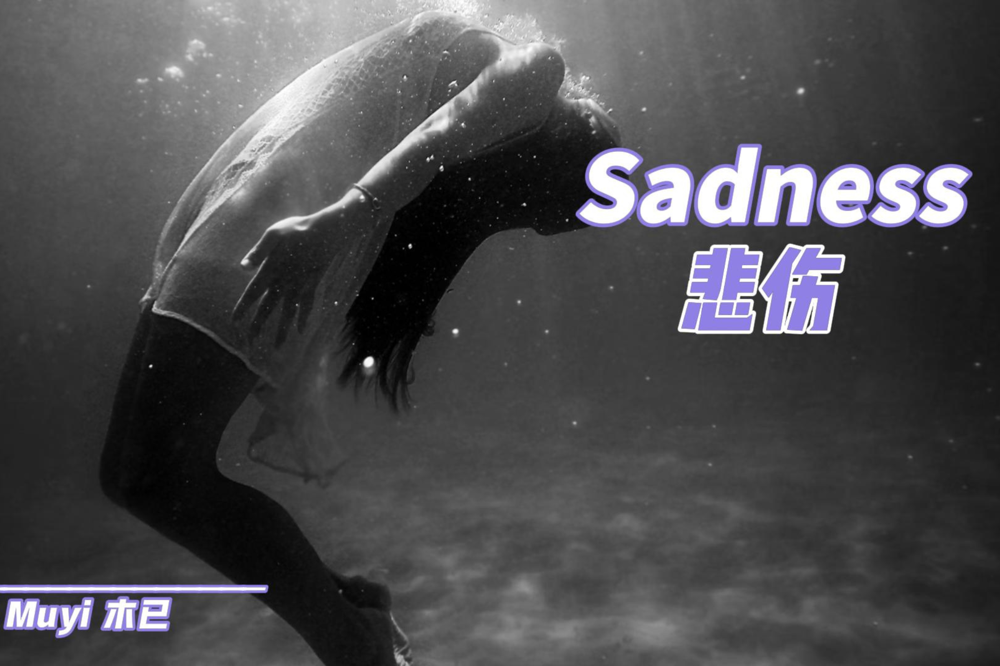

Sadness 悲伤
木已 Muyi

Sadness 悲伤
木已 Muyi
呜~ 那悲伤 仿佛沉寂在大海里
深底里的双手在紧紧抓着我
呜~ 试图不让我回到曾经美好的梦里
当你背着我说不爱的时候
It fucking breaks me
雨依然在下 泪依然在流
我只想这个世界能够静止在这一瞬间
让我停下所有冰冷的刺痛
Because I can't bear it
You know I still love you
But reality tells me that this is
该死的现实 该死的爱情
So I cried at night
呜~ 不断的 撕碎我脆弱的心
当血流透我和你最爱的床
呜~ 你的眼里却只有冷漠和冰冷
开始恨你让我的世界坍塌
Cause it fucking breaks me
雨依然在下 泪依然在流
我只想这个世界能够静止在这一瞬间
让我停下所有冰冷的刺痛
Because I can't bear it
You know I still love you
But reality tells me that this is
该死的现实 该死的爱情
So I cried at night
嗯~ 再多的泪也换不回曾经
当我挣脱出大海的压抑
I decided to destroy it all
Cause this is who I am
Because I can't bear it
You know I still love you
But reality tells me that this is
该死的现实 该死的爱情
So I cried at night
So I cried at night
So I cried at night
So I fucking cried at night
该死的现实 该死的爱情